Self-evaluation of the secure software development for CERN.
In this section I am going to share my reflections and attempt of self evaluation of the secure software development for CERN application.

In this section I am going to share my reflections and attempt of self evaluation of the secure software development for CERN application.
For the development Team project, I and the rest of my team members, we decided to make a secure software application of CERN (fr. Conseil européen pour la recherche nucléaire). This is a scientific and research organization that conducts fundamental studies in nuclear physics and particle physics. As a scientist myself, it could not be a better choice. This application is meant to be dedicated for scientist forking at this institution. Each scientist will be using this software after registration process. Having a personal username and password, they can get access to the software and its resources with some restrictions. The program is basically created for creating, storing, downloading, editing and deleting scientific experiments (data).
To create this software in a secure way we were trying to apply GDPR recommendations for legal and technical requirements. For this reason we decided to follow secure solutions as follow:
a) Authentication and authorization to prevent unauthorized individuals access and unwanted data exposure.
b) Event monitoring to follow actions within the software to comply incidents and incident management.
c) Data encryption to securely store and transfer the data.
d) Preventing SQL injections.
A Class diagram of my authorship.
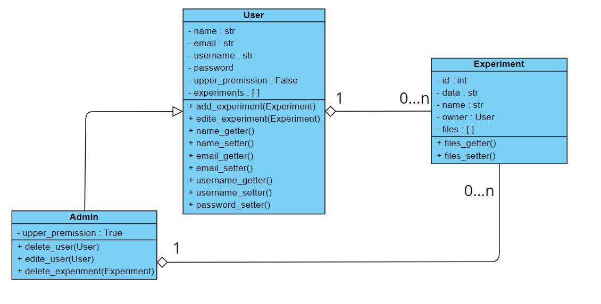
Flowchart of authentication of my authorship.
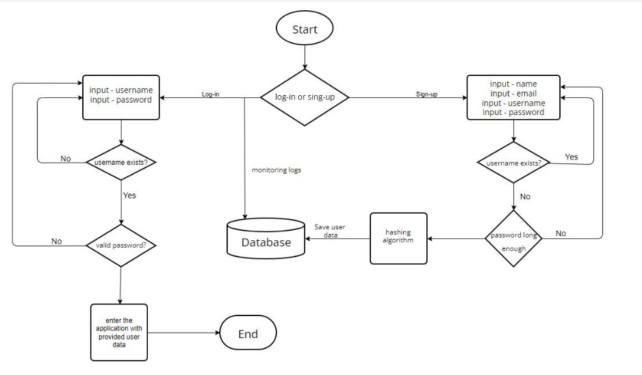
Sequence diagram
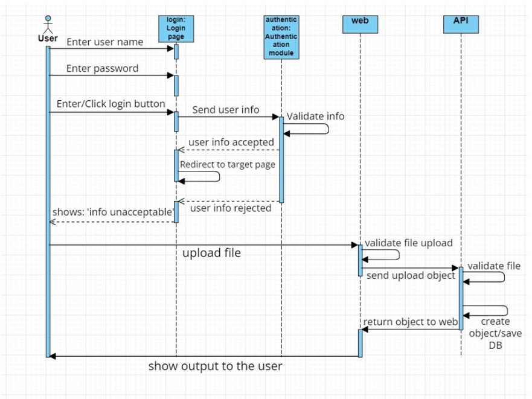
User Request Processing Sequence Diagram
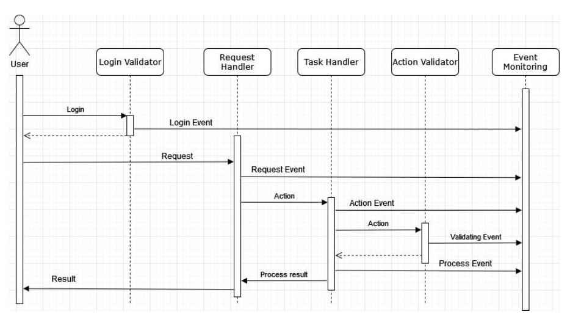
As I previously mentioned about GDPR requirements, we applied secure solutions as follow:
Injection:
We developed the CERN application that is based on connecting to the database and performing CRUD actions towards designed functionalities. However, we are aware of potential attacks that may be caused by getting admin account details that might lead to threat to other databases connected to the system. This, of course, can bring numerous malicious actions like: unwanted deleting data, unwanted changing data and unwanted data exposure. That is why our software has to recognize legitimate requests and sanitize potentially harmful ones. For this reason we implemented Python parameterized queries to perform MySQL database operations.
Authentication of my authorship
In our system design we implemented log-in and sing-up functions to get an access to the application. A user can sing-up to the application by providing: name, e-mail address, username (acting as an id) and finally password. The user can have an access to the application by logging-in by providing their username and password. We used a hashing function to securely save users’ passwords by SHA-256 algorithm. It will transform each user’s password with a random length into a sequence 256 bits and all secured hashed passwords will be stored in the database. This algorithm is deterministic (the same output for the same input) and has avalanche effect, even a small change results in diametrical change in the output:
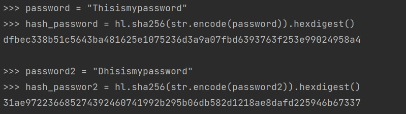
Moreover, to make the application more secure, application logs would be necessary. This would be a simply a file that contains all the events regarding logging-in or attempts of logging-in. We inteded to implement a proper solution to save this type of data (who, when, how many times etc) in the database. Based on OWASP sufficient logging and monitoring can prevent many attack by proper log files and security sensitive date analyzing.
Authorisation
In our application we distinguished two type of users: an admin and a regular user. The system will be provided with various configurations to each user’s request to satisfy different scenatios. For example an administrator will have right to download, delete, change and upload data experiments. A user, however, can upload, download data experiments but change and delete only these ones that are assigned to him/her ((sh)he’s the owner of the experiment).
Event monitoring
We intended to support our system design with appropriate component to record all the events in the system, and system maintainers can audit data to determine any suspect action.
Data encryption
We armed our system design in data encryption tool to fulfil GDPR recommendation against data exposure. We decided to use Always Encrypted (a feature design to protect data) a solution developed by Microsoft, that stores keys separated from the database, and only decryption is possible when an individual (that holds the key) uses it to do so.
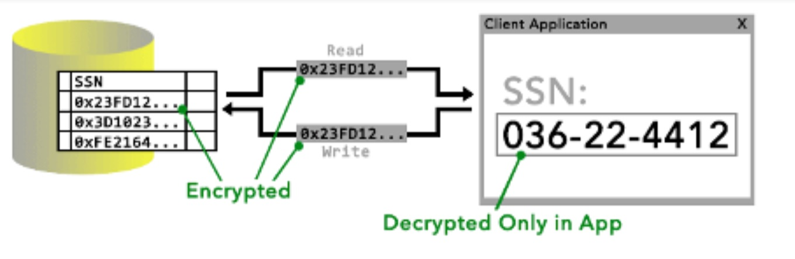
The result of our team work can be found in my repository on GitHub:
https://github.com/grzegorzpikus/SSD/tree/master/Complete-Meditation-main
As a student developing my coding skills as well as learning basic concepts of secure software development, it was not a surprise for that our initial plan may not entirely reflect in our actual design. We have been struggling with many technical aspects that we had to overcome or find other solutions. During the project development we improved some parts of our system but also we had to find different, alternative solutions to meet the initial expectations (for example when our original plan was too difficult for us to implement). Having said that, I can speak only for myself, I would like to highlight some key changes of incomplete plans as well as solutions that I could have added.
In our team I was responsible for Authentication part. My initial plan was to create a platform to login and sign up for users. To accomplish this I needed four essential items:
1. Hashing algorithm - that I described above in Preventing Attacks section. This part I accomplished successfully in my opinion.
2. Logical and well written code that can accept input, analyze it and return appropriate output. Here, I personally think that I did a good job, however some improvements or changes should have been made. I tired to follow PEP 8 – Style Guide for Python Code as much as I could, but still I could not have done it thoroughly. For example: names of files (modules), names of functions, appropriate comments, quality of my comments (not only WHAT but WHY). At the end of the Unit 11, I did not have much time to make serious changes to my code and that results in a function which the only job was initialize another function, for example add_user() in Authentication.py file that initializes sql_add_user() in database_managment.py. I could have directly refereed to the last one. Another aspect is a function password_strength() in Authentication.py file, where I might have used regex to simplify my code. I am convinced that there are many more of examples, where my code could have been improved, however under the pressure of time I tried to make it work in a secure way as much as possible.
3. User class and its child class Admin - that I described in UML of proposed system. The final results is similar but not entirely the same as I proposed above. Firstly, not all attributes of User Class are private. user_name as well as admin attributes are not private because I had to refer to them in different parts of the code. Moreover, I did not put getters and setters to give users ability to apply changes in their personal accounts. That is a major mistake. To the Subclass Administrator I added a function print_all() that print all registered users and their details. I think I is a good functionality, however I would change it. Because for now all user details are printed (including hashed password). In my opinion this should not have happened. Name, email and username are the only details that administrator could have access to. At the end I added also upgrade_user() function that changes an admin attribute form 0 to 1 of a chosen user to upgrade their account to become an administrator. This functionality should be quite useful, but I am also aware about potential security risks.
4. Others. For our system software I prepared I UML chart that describes step by step actions that can be taken by an individual (my authorship).
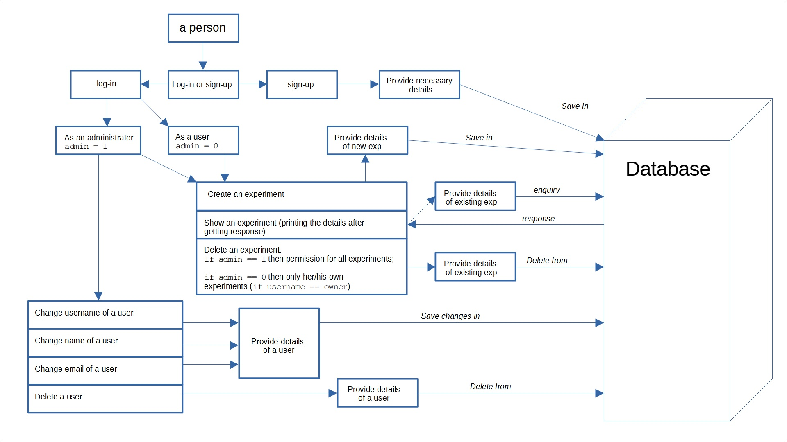
This graph is quite accurate that I wanted to achieve and almost all these steps and functionalities were implemented.
The authentication is a part of our team project. However, to present only the piece I was responsible for, I extracted my part of the software to be an individual module, that can be executed and tested independently. The code can be found in my repository on GitHub here:
https://github.com/grzegorzpikus/Authentication_login_singup
In authentication section there are two main functions log_in() and sign_up(), both are located in Input_checker. However, to run the script, main.py file has to be run. To explain how this part of our assignment works, I prepare images showing the functionality:
i) to initialize the code, main.py file has to be executed:
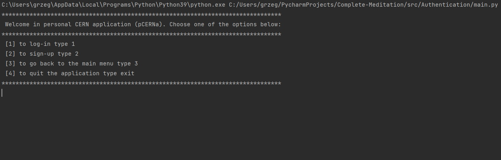
ii) selecting option 1 to log in, user name and password need to be provided:
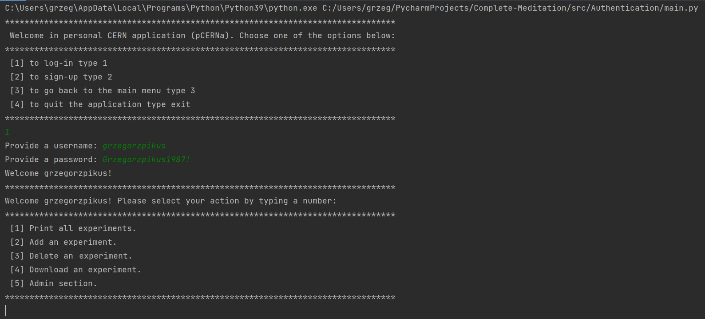
iii) a regular user has lodged in. Form the user menu, it is possible to go to the admin section. However, a regular users do not have access to it:
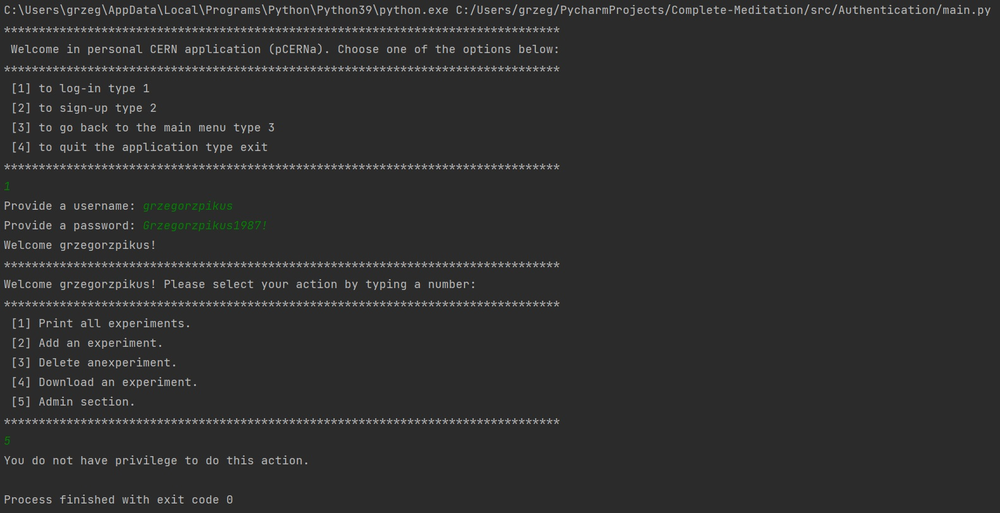
iv) running main.py file again and selecting option 2, a new user can be added to the system. Name, e-mail address, username and password need to be provided. It is important to point out that, the e-mail domain has to be cern.ch, because this software is dedicated for CERN employees only. To verify it email_fn() checks the domain. The second important matter is that , a username must be unique. That is why, the function username_fn() initialize user_exists() function to check if the provided username exists in the database. Moreover, username is a primary key in SQL database to filter user data. The last issue is password. To make sure that potential users create strong passwords, they are tested by password_fn() function. Each password has to contain at least 10 characters, at least one uppercase, one lowercase, one number and one special character. On the picture below, a new user (harrybaldwin) had been successfully added to the database.
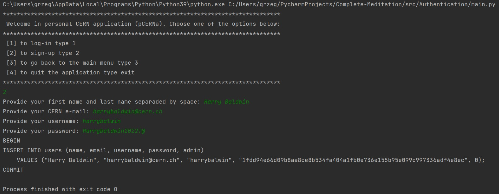
v)This time, a admin is going to log in:
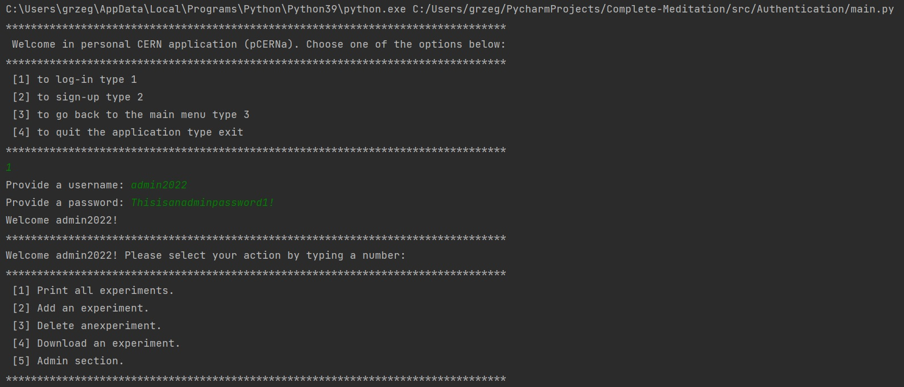
vi) Now, a user admin2022, can access the admin section by typing 5 in the user menu:
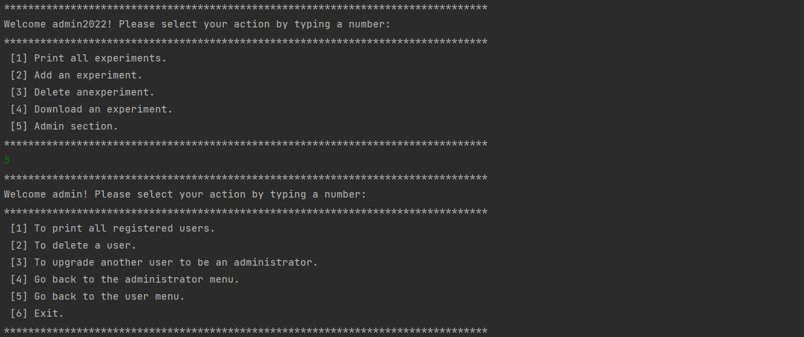
vii) an admin has a right to get a list of all registered users:
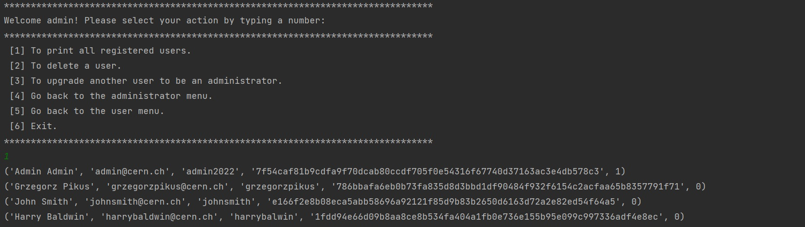
viii) an admin can also delete an existing user form the database:
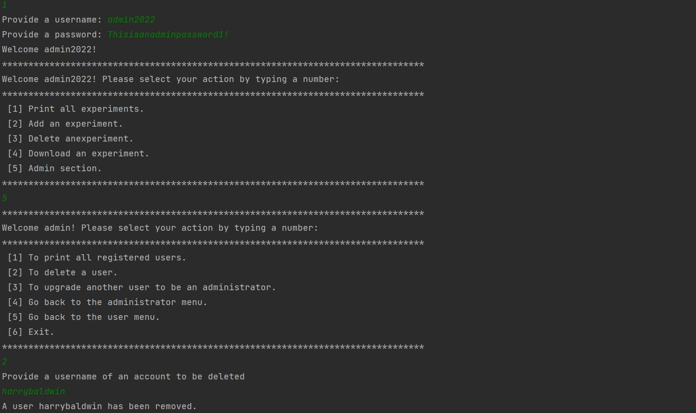
ix) At the end, I would like to present that I provided 24 unit tests to check that I implemented the functionality of my functions and classes correctly. 24 tests run successfully. It can be tested by running unittests.py script:
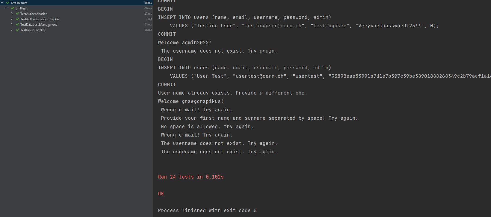
I am convinced that, I achieved the main goals of authentication:
*** I successfully used hashing algorithm to securely storing users' passwords.
*** I connected my code to the database.
*** I created two types of users with different permission level.
*** Inputs that are passed to the system have to have a specific format that is being checked each time.
*** If some inputs are incorrect, the system returns appropriate message like: "username already exists, try again", "a user does not exists", "password too short", "Password needs to have at least one uppercase character." and much more.
*** My part of the project works well with the main core and in the flask.
Moreover, there are some security aspects that I wanted to add, however, lack of time and lack of coding experience did not allow me to do so. There are as follow:
a) Event monitoring and saving logs to the file. To improve security during logging process I wanted to monitor and collect data on how, form where (IP), and how many times logging in or attempts to log in, happen.
b) Referring to the solution above (a) I wanted also to implement a function that would block a user account, if a provided password (three times in a row) was incorrect in a short amount of time (between 3 or 5 minutes – it would need to be tested to establish a reasonable time window). To achieve this, I would need an additional attribute in User Class (like status = True - an active account, status = False, blocked account). Of course, an administrator would change this attribute, if a user was verified. I would also need a solution to track logs and their times to be able to control this blocking functionality.
c) Lastly, I wanted to verify a potential user e-mail address during sign up process. When an individual wants to sing up, (s)he provides e-mail address, before the account was created, verification code would be sent to verify the identity. This might have been accomplished via this pseudocode:
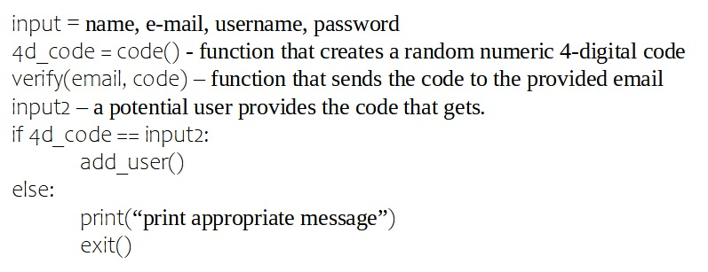
I truly believe that, I have got familiar with basic aspects of secure software development. However, the process of learning has to continue. I did my best to accomplished goals that had been given within this part of the module. And it gave me knowledge to be aware of numerous threats and how I can deal with them or where I could look for recommendations and potential solutions.